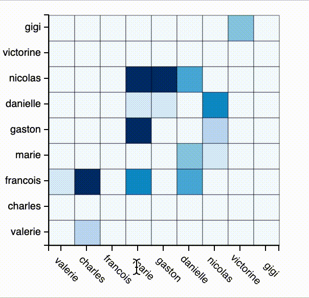

Objectif du TP
Réaliser une matrice d'adjacence similaire à celle ci-dessous.
1. Chargement des données
Les données représentant des réseaux sont typiquement divisées en deux. Un fichier représente les noeuds, un autre les liens entre les noeuds.
Pour ce TP nous allons utiliser des pseudo données de réseaux social: quelques personnes se suivent, chacune a des followers et suit d'autres personnes. La force du lien est le nombre de followers en commum.
2. Restructurer des données sous forme de matrice
Pour vous faire gagner du temps, voici une fonction qui prend en entrée,
les noeuds et les liens, et retourne un Array avec toutes
les liens possibles entre noeuds, et la valeur associée à ces liens : le
nombre de shared_followers, ainsi qu'une position en x et en y qui
corresponde à la position dans la matrice d'adjacence.
function createAdjacencyMatrix(nodes,edges) {
var edgeHash = {};
for (x in edges) {
var id = edges[x].source + "-" + edges[x].target;
edgeHash[id] = edges[x];
}
matrix = [];
//create all possible edges
for (const [a, node_a] of nodes.entries()) {
for (const [b, node_b] of nodes.entries()) {
var grid = {id: node_a.id + "-" + node_b.id, x: a, y: b, sharedfollowers: 0};
if (edgeHash[grid.id]) {
grid.sharedfollowers = parseInt(edgeHash[grid.id].sharedfollowers);
}
matrix.push(grid);
}
}
return matrix;
}
3. Préparer l'échelle de couleur
Récupérer la valeur maximale de sharedfollowers
Comme dans le TP précédent on peut utiliser d3.scaleQuantize(), le domaine est entre 0 et votre valeur maximale, le range celui de votre choix.
4. Afficher la matrice d'adjancence
Créer et positionner un élément svg vide qui va contenir la matrice.
var matriceElt = d3.select("svg")
.append("g")
.attr("transform", "translate(50,50)")
.attr("id", "adjacencyMatrix");
5. Ajouter des axes
A la différence des TPs précédents, nous allons cette fois ci utiliser les axes de d3
// On définit la taille de notre de notre axe,
// 25 correspond à la taille en pixel d'une cellule de notre matrice
// nodes.length correspond au nombre de ligne et de colonnes
var scaleSize = nodes.length * 25;
x = d3.scaleBand()
.domain(nodes.map(function (el) {return el.id}))
.range([0, scaleSize])
y = d3.scaleBand()
.domain(nodes.map(function (el) {return el.id}).reverse()) // reverse() inverse l'ordre des éléments pour que l'affichage se fasse dans le bon ordre en x : testez sans pour voir ce qui se passe.
.range([scaleSize, 0])
On a créé nos échelles on peut maintenant les passer à d3 axis qui va créer les éléments svg nécessaires.
d3.select("#adjacencyMatrix")
.append("g")
.attr("transform", `translate(X,Y)`) //TODO changer X et Y pour positionner correctement l'axe
.call(d3.axisBottom(x))
d3.select("#adjacencyMatrix")
.append("g")
.call(d3.axisLeft(y))
call() va chainer l'appel à d3.axis... à la selection elle même
6. Guides visuels
Pour terminer sur le même principe que les tooltips que nous avons vu dans les TPs passés, nous allons placer des guides visuels qui facilite la lecture .
Ajouter deux éléments transparents à votre svg qui serviront de guides, lors du mouseover sur une cellule rendez les guides visibles et positionez les au bon endroit (voir le gif ci-dessus).
Rendu pour ce TP
Le rendu final est pour le mercredi 20 décembre à 23h59, en utilisant le formulaire suivant (rendu TP4). Le TP peut se faire en binôme.